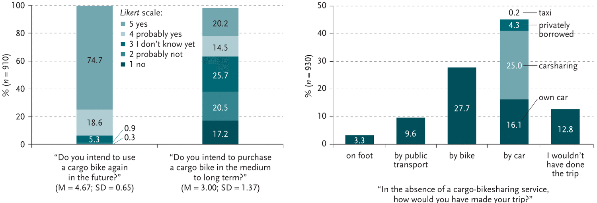

Besonders für kleine, aber auch große Transporte im städtischen Raum bieten Lastenräder sowohl im privaten als auch im gewerblichen Raum eine echte Alternative. Eine Studie des europäischen Cyclelogistics-Projekts bestätigt, dass 51% aller motorisierten Transporte mit dem Fahrrad oder Lastenrad erledigt werden können. Zwei-Drittel dieser Transporte sind private Fahrten. In Kopenhagen und Amsterdam gehören Autos längst nicht mehr zur primären Transportmethode. Durch das konsequente Aufzeigen der Vorteile von Fahrrad und Lastenrad werden autofreie Städte erst konkret vorstellbar.
